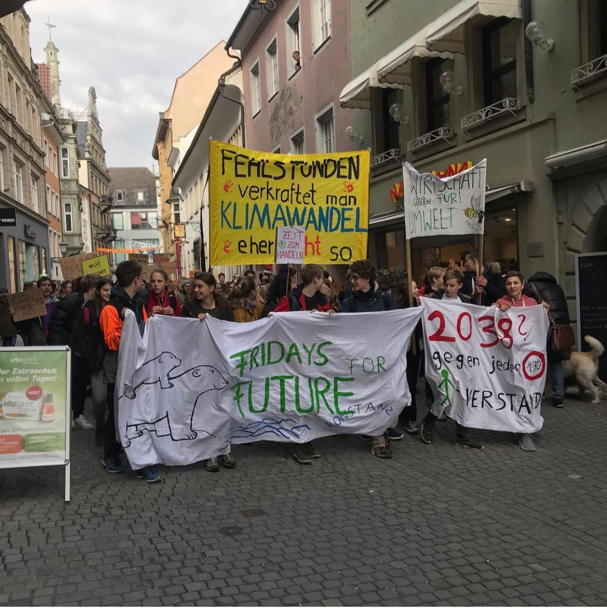

Konstanzer
SchülerParlament
Was ist das KSP?
Das Konstanzer Schülerparlament (kurz KSP) ist ein Zusammenschluss aus Schülern von allen Konstanzer Schulen. Diese vertreten die Jugend von Konstanz gemeinsam vor der Stadt, d.h. sie nehmen an Ausschuss- und Gemeinderatssitzungen teil und besitzen ein Rede- und Stimmrecht.
Mehr erfahren...Aktuelles
Besuchen Sie jetzt unseren Blog, um direkten Zugang zu allen Informationen zu aktuellen Ereignissen und Events rund um das KSP zu bekommen.
Jetzt besuchen!

Unser Team
Das KSP besteht aus einer Vielzahl an Beteiligten von allen Schulen.